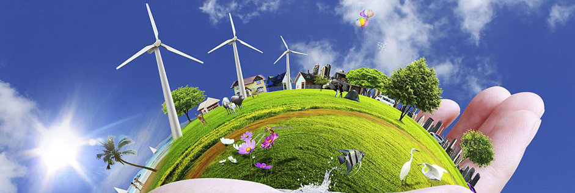

Contact Info Offices
Head office :
145/5B, Jeyaraj Road,
Tuticorin - 628 002.
Tamil Nadu.
INDIA.
Tel : 0091-461-2320061/2338661.
Fax: 0091-461-2331509.
Administrative office :
P-18, Stop N Shop .Plaza, Offtel Towers,
R.C. Dutt Road,
Vadodara 390007.
Gujarat.
INDIA.
Mob : +91 9974765115.
Off : +91 2652330066.
Fax : +91 2652337946.
Corporate office :
Brijwasi Bungalow, T-135, Grotovilla,
Nr. Sangeeta Apartment, Juhu Road, Santacruz (W),
Mumbai - 49.
Maharashtra.
INDIA.
Off : +91 2226605908/1073.
Email : drarulrhai@gmail.com
iayeshtanna2QOO@vahQO.com
iaveshtanna2QIQ@gmail.com
www.arulsenvironment.com